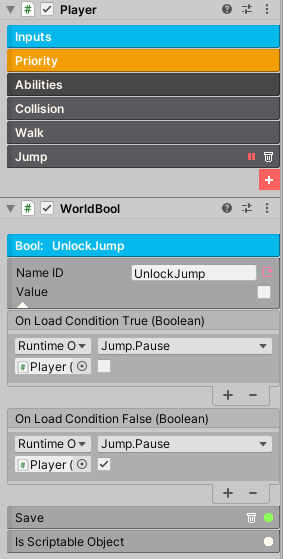

Unlock Ability
In certain games, the player must find and unlock new abilities in order to progress through the game. These abilities are often obtained by completing certain tasks or finding hidden items, and they allow the player to access new areas and defeat tougher enemies.
In this tutorial, we will set up the foundation for unlocking abilities in the game. Initially, the player will have a limited set of abilities and eventually gain more as the game progress. Once an ability is unlocked, the ability must remain unlocked throughout the lifespan of the game, regardless of game level or wether the game is turned off. The WorldBool component will be crucial for this to work.
The Setup
In your player controller, add the WorldBool component.
The WorldBool is used for saving. In order for this to save correctly, give the Name ID a relevant and unique name. Initialize it's Value to false. Enable the Save option (reminder: click the trash icon to clear the saved data for testing). Now, the On Load events is where the real magic happens. You will need to drag and drop the player object into each event. For Load Condition True